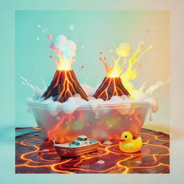

Okay, so now it's an album.
First came the one song, then the game, and I figured that was the whole story. It wasn't. Once the song was done, I looked at my pile of half-finished ideas in a whole new way, and that's how this album started.
Exploding Volcanoes

Tap a song to play it.
The player comes from Suno, where the album lives, and only loads when you tap a song. Open the album on Suno
The pile of half-finished songs.
For about twenty years I've been collecting song ideas. Most of them never got finished. They sat in the pile, stuck at about 85%, and it never once occurred to me to try this on them. The volcano song came out of the same habit, on bath night: something catchy turned up while I was strumming, and I hit record so I wouldn't lose it.
Then the first song worked, and my thought was: what if we do it for this other stuff? Without AI, those ideas would have stayed right where they were, and I never would have done anything with them.
Fifteen in one shot.
I picked out the fifteen best ideas from those twenty years and uploaded them all at once, in one shot.
When they came back, my reaction was:
“Holy cow, we've got an album.”
The part I can't settle.
On one side
I feel real artistic conflict about this, and I don't want to hide it. These are my ideas and my guitar, and letting a machine finish them is an uneasy thing for me to do.
On the other
Twenty years of ideas stuck at 85%. I don't have the time or the money for production, and this got me there. I don't have the best voice, and my guitar is good enough but I'm no prodigy. I always thought I could write a compelling tune, and my voice and playing were the wall between that tune and a finished song.
Both things are true for me. It finished something that had been stuck for years, and I'm still uneasy about how it got finished. I'm not going to wrap that up neatly here.
“I had a pile of unfinished songs. Now I have an album.”
Why it's called Exploding Volcanoes.
The project, the band if you will, is also called Exploding Volcanoes, because that's what got everything started.
The pile isn't a pile anymore. It's an album.
Where it all started
All of it goes back to one soggy night in the tub, and the game is still right here to play.